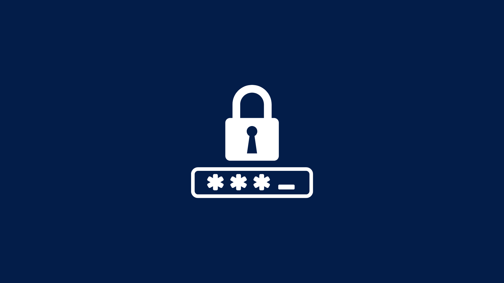
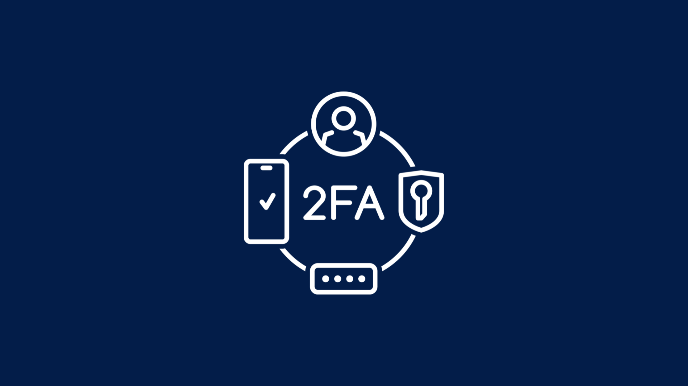
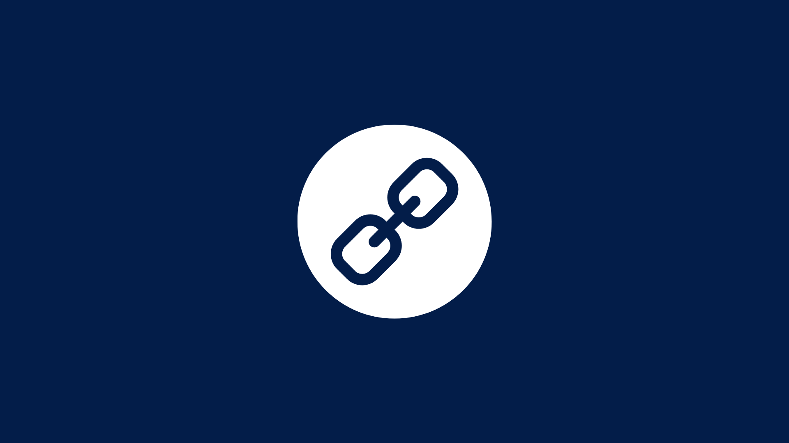
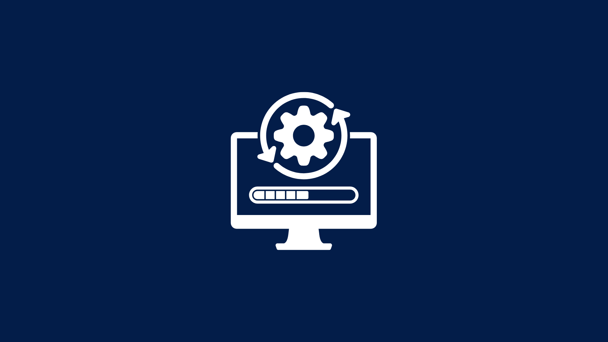
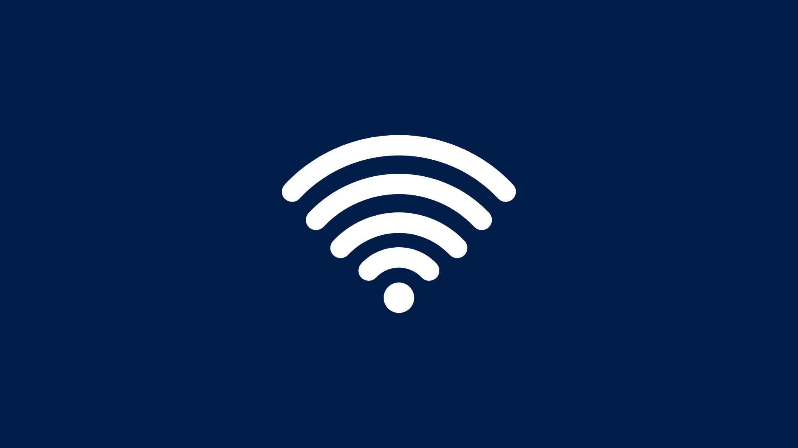
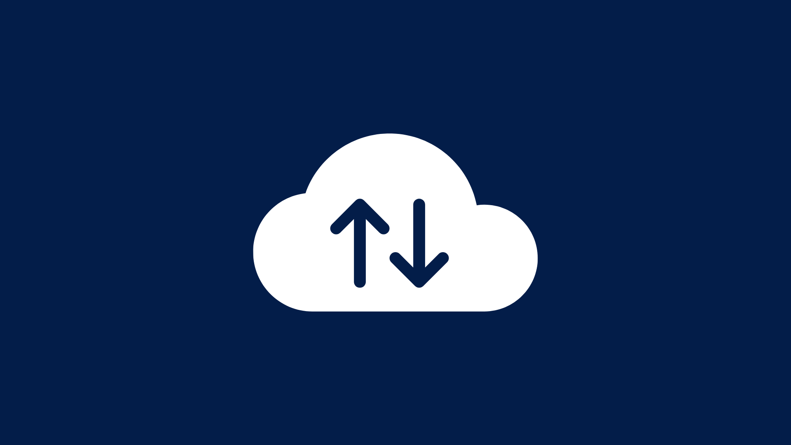
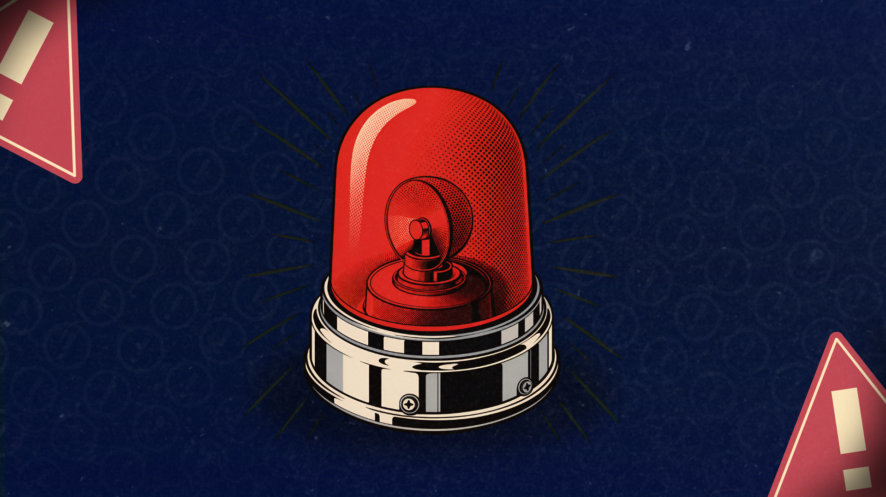

Central de Conscientização Digital
Guia prático e interativo para identificar fraudes, reforçar suas credenciais e agir com rapidez em situações de emergência digital.
Golpes Mais Comuns no Brasil
Entenda a mecânica das fraudes financeiras e de engenharia social que mais fazem vítimas atualmente.
Falsa Central de Atendimento
Ligação simulando ser do seu banco informando uma "compra suspeita" e pedindo que você transfira dinheiro para uma "conta segura" ou instale um app.
WhatsApp Clonado (Número Novo)
Alguém usa a foto de um familiar em um número diferente, avisa que "trocou de chip" e logo pede dinheiro emprestado para pagar uma conta urgente.
Boleto Falso ou Adulterado
Recebimento de boleto de IPVA, financiamento ou mensalidade via WhatsApp/E-mail com dados de cobrança modificados para a conta do golpista.
Falso Rastreio de Entrega
SMS ou e-mail afirmando que sua encomenda dos Correios ou alfândega foi "taxada" ou "retida", exigindo o pagamento de uma pequena taxa via Pix para liberar.
Dicas Essenciais de Proteção
As recomendações fundamentais para manter suas contas e dados blindados.

Credenciais1. Gestão de Senhas
Crie senhas longas (mais de 12 caracteres) e nunca reutilize a mesma chave em contas bancárias e e-mails.

Autenticação2. Duas Etapas (2FA)
Habilite a verificação em duas etapas no WhatsApp, e-mails e redes sociais para criar uma barreira extra contra invasões.

Engenharia Social3. Atenção a Links Suspeitos
Desconfie de mensagens urgentes, sorteios, cobranças inesperadas ou ofertas boas demais recebidas por WhatsApp ou e-mail.

Sistemas4. Atualizações do Sistema
Mantenha o sistema operacional do celular (iOS/Android) e os aplicativos bancários sempre atualizados para corrigir brechas.

Redes5. Cuidados com Wi-Fi Público
Evite acessar aplicativos de banco ou digitar senhas em redes Wi-Fi abertas de shoppings, aeroportos ou cafés.

Backups6. Backup de Arquivos
Faça cópias de segurança periódicas dos seus documentos vitais e fotos na nuvem ou em um HD externo físico.
Checklist de Prevenção Digital
Avalie seu nível atual de hábitos seguros marcando os itens abaixo. Seu progresso é salvo no dispositivo.
Nível de proteção: 0%
Verificador de URL Suspeita
Cole um endereço (link) abaixo para verificar padrões estruturais comuns em engenharia social e golpes:
* Análise educativa baseada em padrões de texto do domínio (heurística local). Não verifica bancos de dados externos nem garante 100% de segurança.
Mitos e Verdades Rápidos
Apesar do sistema fechado, usuários de iOS estão tão expostos quanto os do Android a páginas falsas de phishing e golpes de Pix por WhatsApp, que independem de vírus no aparelho.
O cadeado apenas garante que a comunicação entre você e o site está criptografada. Criminosos hoje também registram certificados HTTPS gratuitos para sites falsos de banco.
O comprimento da senha multiplica exponencialmente o tempo para um ataque de força bruta ter sucesso. A frase cavalo-papel-bateria-24 é muito mais forte que T3st!9.
Ele apenas não salva seu histórico local e cookies na máquina atual. Seu provedor de internet, os sites que você acessa e a rede da sua empresa/escola continuam vendo seu tráfego.
Teste seus Conhecimentos
Você sabe identificar um golpe na prática? Responda ao mini-quiz abaixo.
Fui Vítima de Golpe, e Agora?
Se você caiu em um golpe do Pix ou teve a conta invadida, siga este protocolo de contenção de danos sem perder tempo:
Em transferências via Pix, ligue na central do seu banco imediatamente e solicite o Mecanismo Especial de Devolução (MED) por fraude.
Use outro dispositivo para bloquear cartões físicos/virtuais e desconectar sua conta do aparelho afetado.
De um computador seguro, altere primeiro a senha do seu E-mail Principal e depois de redes sociais e bancos.
Tire prints (capturas de tela) das conversas, links e comprovantes e registre um Boletim de Ocorrência na Delegacia Eletrônica do seu estado.

Deseja guardar suas senhas e credenciais com segurança?
Gerencie senhas criptografadas localmente no seu navegador sem depender de servidores externos, garantindo privacidade absoluta.
Acessar o Cofre de Senhas Criptografado →